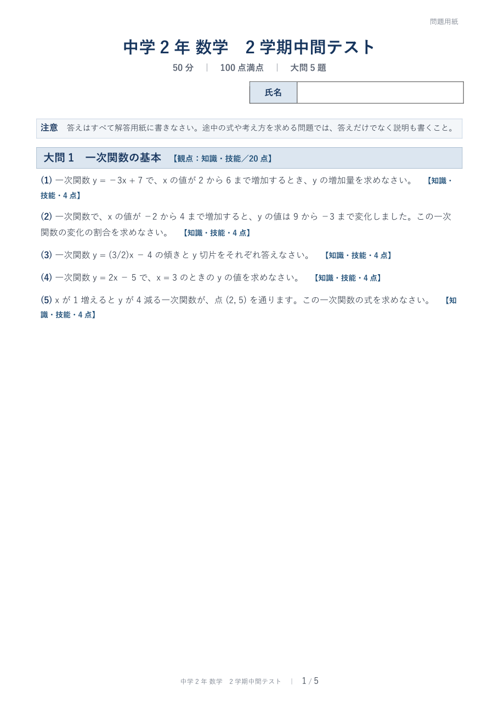

中学校の先生に向けて、OpenAIのCodexに中間テスト・期末テストを作らせる手順を、5回に分けてお伝えします。Codexに渡すのは範囲メモ1枚だけ。問題用紙・解答用紙・模範解答の3点をWordファイルで受け取り、先生が全問解いて確かめてから配ります。本文は、AIで教材を作っているとざき先生と、中学校で数学を教えて2年目のはると先生の対話で進みます。見本のテストは、この講座のために実際にCodexに作らせたものをそのまま載せています。1回あたり、読むのに約10分です。
テスト作りを6つの工程に分けると、任せるのは真ん中の3つです。チャットのAIとCodexの違いと、範囲メモがなぜ効くかをお話しします。この回は読むだけです。
第1回を読む → 2 LESSON 2ChatGPTの有料プランでCodexを開き、テスト用のフォルダを1つ作ります。範囲メモの書き方はここで決まります。パスワードだけは自分で扱います。
第2回を読む → 3 LESSON 3中学2年 数学の2学期中間テストを、頼んだ言葉の原文からCodexの返事、できあがったWordファイルまで1本まるごとお見せします。
第3回を読む → 4 LESSON 4問題を易しくする、記述を足す、解答欄を広げる。直しは全部日本語で頼みます。数学以外の教科での範囲メモの書き方にも触れます。
第4回を読む → 5 LESSON 5全問を自分で解く。教科書の文章を渡さない。生徒の情報を入れない。AIが作ったテストを自分のテストにするための線を、私が毎回通している形でお渡しします。
第5回を読む → + EXTRA体育科の先生からの相談で作った回です。保健分野の期末テストを、各問題に学習指導要領のどこに基づくかを明記した形で作らせます。一次資料をフォルダに置く型と、対応表の照合まで。
番外編を読む →この講座で先生が自分の手でやるのは「範囲を決める」「全問を解いて確かめる」の2つです。それ以外の作業は、Codexに日本語で頼みます。
